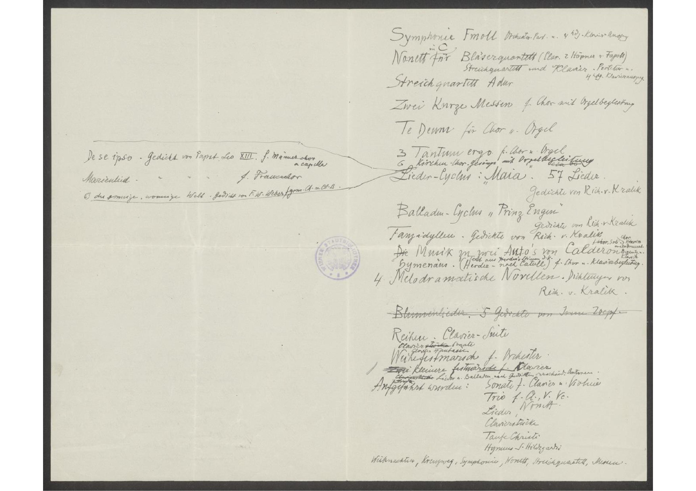

Wien 19. Okt. 1904
Ich bin am 3. Dezember 1857 zu Linz
an der Donau geboren. MeniMein Vater
gest. 1877) war Glasfabrikant (Chef der
Firma Meyr's Neffe in Böhmen), meine Mutter
ist eine geborene Lobmeyr (Schwester des
Herrenhausmitgliedes und Glasindustriellen
Lobmeyer zu Wien). Meinem Vater und
meiner Mutter verdanke ich den musikalischen
Sinn und die Liebe zur Musik. Mein Vater
war passionirter Geigenspieler, wiewohl Auto-
didakt und pflegte im Böhmerwalde eifrig
das Quartettspiel. Meine Mutter spielte als
Dilettantin gut Klavier und neigte schon
als Mädchen der ernsten Klassischen
Richtung zu. Von meinen Eltern hörte
ich zuerst Beethoven's Violin-Klavier-Sonaten.
xHaydn, Mozart lernte ich durch Anhörung
der häuslichen Quartette kennen. Später
übernahmen dann meine beiden älteren
Brüder und schliesslich ich mit ihnen die
Hausmusik die in Duos, Trios und Quatros
Klassischer Richtunc unserer Klassiker bestand.
Meine ersten Kompositionsversuche
förderte mein Bruder Richard, der sich lebhaft
x oder: Haydn's und Mozart's Klänge wurden mir zunächst durch die
häuslichen Quartette vermittelt.
obt.
In den folgenden Jahren pflegten wir in
unserem zu Hause den a capella-Gesang, wodurch ich mit den [dem] Werken
Werken des der niederländischen und italienischen u. deutschen
Meister des XV. uund XVI. Jahrhunderts vertrauter
am liebsten . hauptsächlichen
wurde. Immer Daneben ging Als mein großten
Lehrmeister betrachte ich Bach für die
modernen formenFormen ihr di intneritinteressierte
[unleserlich] mich persnölpersönlich Liszt.
dafür interessirte.
Meinen ersten Klavierunterricht genoß
ich bei meiner Mutter, dann bei Eduard Hauptmann in Linz. Meine ersten
Kompositionsversuche forderte mein
Bruder Richard, der sich lebhaft dafür interessierte.
nach unserer Übersiedlung nach Wien
im Jahre 1870 erhielt ich Unterricht im
Klavierspiel und in der Harmonielehre
von Carl Hertlein (Flötist der Hofoper).
Im Jahre 1875 wurde ich Privat-Schülerin
von Professor Julius Epstein für Klavier;
Er nahmEr nahmder ernsten Anteil an meinen Kompositionen
nahm und riet mir zur weiteren Ausbildung
Anton Bruckner für Contrapunkt vorschlug,
dessen Unterricht ich privatim ein Jahr
genoss bis in meinem Eintritt im in die
Kompositionsschule des Wiener Konservatoriums
im Oktober 1876. Ich wurde in den zweiten
Jahrgang [unleserlich] Schule Professor Franz Krenn übernommen
Nach Absolvierung des folgenden dritten Jahrganges erhielt
ich den (I.) ersten Preis. | Meine Kompositionen
sind zum Teil gedruckt, zum größerem Teil
noch Manuscript. Erstere, bestehen in:
sind im Verlage Gutmann, Wien, erschienen, und
sind:
Narodny
- Sonate für Clavier und Violine
- Trio für Clavier, Violine und Cello
- Fünf Clavierstücke
(Festmarsch, Träumerei, Liedchen, Intermezzo)
Gavotti, ) - Der Rosenkranz
(Gedicht von Richard Kralik, für eine Singstimme
mit Begleitung des Claviers). - Büchlein der Unweisheit
(Gedichte von Richard Kralik, für eine Singstamm
mit Clavierbegleitung. - Lieder im Heiligen Geist von Richard und Mathilde Kralik für eine Singstimme mit Clavierbegleitung.
- Die Taufe Christi. Gedicht von Papst Leo XIII. für eine
Singstimme mit Clavierbegleitung. - Hymnus S.Sankt Hildegard'o für Sopranerla, Frauenchor
und Clavier. - Ingendlieder für eine Singstimme mit Clavierbegleitung.
UngedrukteUngedruckte Kompositionen:
Weihnachten. Cantate für Soli, Chor u.und Orchester.
Gedicht von Richard v.von Kralik
OrchesterPartitur u.und 2 hdg.händig Klavierauszug
Der Kreuzweg. Cantate für Soli, Chor u.und Orchester.
Gedicht von Richard v.von Kralik
Orchester Partitur u.und 2 hdg.zweihändig Klavierauszug
Blume und Weißblume (Fleur et Blanche-
Oper (Märchenspiel) fleur).
Oper in drei Akten. Orchesterpart u.und 2hdg.zweihändig Klavierauszu
Märchenspiel Dichtung von Richard v. Kralik

De se ipso. Gedicht von Papst Leo XIII. f.für Männerchor
a capella
Marienlied . . . . f.für Frauenchor
O du sonnige, wonnige Welt. Gedicht von F.W.Weber fgem.Ch.m.Cl.B.für gemischten Chor mit Clavierbegleitung
Symphonie Fmoll Orchester.Part. u. 4 hdg.Orchesterpartitur und vierhändiges Klavier
Nonett in C für Bläserquartett (Clar.Clarinette 2 Hörner u.und Fagott)
Streichquartett und Klavier, Partitur u.und
Streichquartett A dur 4 hdg.vierhändiger Klavierauszug.
Zwei Kurze Messen f.für Chor mit Orgelbegleitung
Te Deum für Chor u.und Orgel
3 Tantum ergo f.für Chor u.und Orgel
6 Kirchen-Chor-Gesänge mit Orgelbegleitung
Lieder-Cyclus: „Maia“. 57 Lieder.
Gedichte von Rich. v. KralikRichard von Kralik
Balladen-Cyclus „Pring Eugen"
Gedichte von Rich. v. KralikRichard von Kralik
Tanzidyllen. Gedichte von Rich. v. KralikRichard von Kralik
f. Chor Soli) Chor Kleria melodramat.melodramatisch Begleitung v.von Klavier
Die Musik zu zwei Auto’s von Calderon
Text aus Herders Stimmen d.v.
Hymenäus. (Herder nach Catull) f.für Chor u.und Klavierbegleitung
4 Melodramatische Novellen. Dichtungen von
Rich. v. KralikRichard von Kralik
Blumenlieder. 5 Gedichte von Irene Zoepf.
Reihen. Clavier-Suite
Clavierstückesonate
Clavier Fauterive
Weihefestmarsch f.für Orchester.
Zwei kleinere Festmärsche f.für Clavier
Clavierstücke Lieder u.und Balladen nach Auszügen verschied.verschiedener Autoren
Aufgeführt wurden: Sonate f.für Clavier u.und Violine
Trio f. Cl., V. Ve.für Clavier, Violine Violoncello
Lieder Nonett
Clavierstücke
Taufe Christi
Hymnus S.Sankt Hildegardi
Weihnachten, Kreuzweg, Symphonie, Nonett, Streichquartett, Messen.
De se ipso. Gedicht von Papst Leo XIII. f.für Männerchor
a capella
Marienlied . . . . f.für Frauenchor
O du sonnige, wonnige Welt. Gedicht von F.W.Weber fgem.Ch.m.Cl.B.für gemischten Chor mit Clavierbegleitung
Symphonie Fmoll Orchester.Part. u. 4 hdg.Orchesterpartitur und vierhändiges Klavier
Nonett in C für Bläserquartett (Clar.Clarinette 2 Hörner u.und Fagott)
Streichquartett und Klavier, Partitur u.und
Streichquartett A dur 4 hdg.vierhändiger Klavierauszug.
Zwei Kurze Messen f.für Chor mit Orgelbegleitung
Te Deum für Chor u.und Orgel
3 Tantum ergo f.für Chor u.und Orgel
6 Kirchen-Chor-Gesänge mit Orgelbegleitung
Lieder-Cyclus: „Maia“. 57 Lieder.
Gedichte von Rich. v. KralikRichard von Kralik
Balladen-Cyclus „Pring Eugen"
Gedichte von Rich. v. KralikRichard von Kralik
Tanzidyllen. Gedichte von Rich. v. KralikRichard von Kralik
f. Chor Soli) Chor Kleria melodramat.melodramatisch Begleitung v.von Klavier
Die Musik zu zwei Auto’s von Calderon
Text aus Herders Stimmen d.v.
Hymenäus. (Herder nach Catull) f.für Chor u.und Klavierbegleitung
4 Melodramatische Novellen. Dichtungen von
Rich. v. KralikRichard von Kralik
Blumenlieder. 5 Gedichte von Irene Zoepf.
Reihen. Clavier-Suite
Clavierstückesonate
Clavier Fauterive
Weihefestmarsch f.für Orchester.
Zwei kleinere Festmärsche f.für Clavier
Clavierstücke Lieder u.und Balladen nach Auszügen verschied.verschiedener Autoren
Aufgeführt wurden: Sonate f.für Clavier u.und Violine
Trio f. Cl., V. Ve.für Clavier, Violine Violoncello
Lieder Nonett
Clavierstücke
Taufe Christi
Hymnus S.Sankt Hildegardi
Weihnachten, Kreuzweg, Symphonie, Nonett, Streichquartett, Messen.